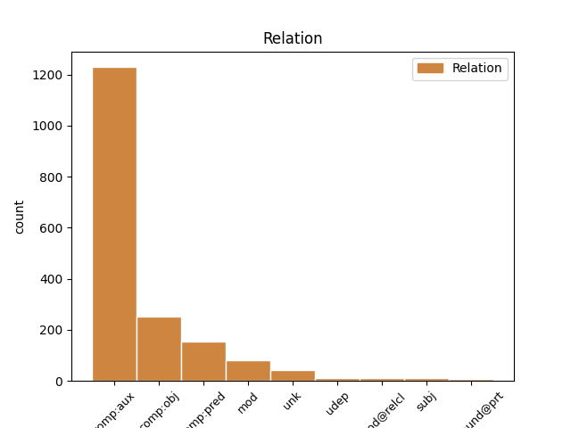
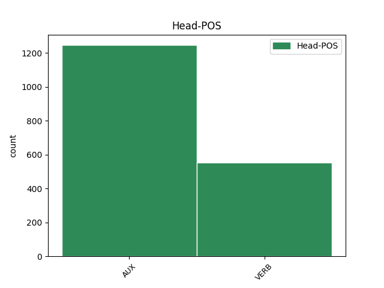
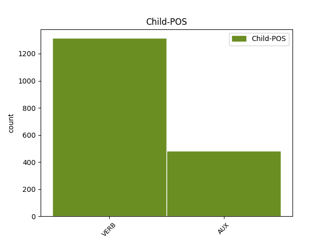

Distribution of features within this leaf



Agreement Rules sorted by frequency.
- When the dependent token is the complement for auxiliary(comp:aux) of the head token, and the dependent token is VERB.
1 På _ _ _ _ 0 _ _ _
2 det _ _ _ _ 0 _ _ _
3 tidspunkt _ _ _ _ 0 _ _ _
4 havde have AUX _ Mood=Ind|Tense=Past|VerbForm=Fin|Voice=Act 0 _ _ _
5 vi _ _ _ _ 0 _ _ _
6 drukket drikke VERB _ Definite=Ind|Number=Sing|Tense=Past|VerbForm=Part 4 comp:aux _ _
7 gin'en _ _ _ _ 0 _ _ _
8 , _ _ _ _ 0 _ _ _
9 og _ _ _ _ 0 _ _ _
10 vi _ _ _ _ 0 _ _ _
11 var _ _ _ _ 0 _ _ _
12 faktisk _ _ _ _ 0 _ _ _
13 halvfulde _ _ _ _ 0 _ _ _
14 , _ _ _ _ 0 _ _ _
15 da _ _ _ _ 0 _ _ _
16 taxaen _ _ _ _ 0 _ _ _
17 kom _ _ _ _ 0 _ _ _
18 . _ _ _ _ 0 _ _ _
1 Kommunerne _ _ _ _ 0 _ _ _
2 skal _ _ _ _ 0 _ _ _
3 sørge _ _ _ _ 0 _ _ _
4 for _ _ _ _ 0 _ _ _
5 de _ _ _ _ 0 _ _ _
6 ældre _ _ _ _ 0 _ _ _
7 på _ _ _ _ 0 _ _ _
8 betryggende _ _ _ _ 0 _ _ _
9 vis _ _ _ _ 0 _ _ _
10 , _ _ _ _ 0 _ _ _
11 og _ _ _ _ 0 _ _ _
12 når _ _ _ _ 0 _ _ _
13 de _ _ _ _ 0 _ _ _
14 ikke _ _ _ _ 0 _ _ _
15 kan kunne AUX _ Mood=Ind|Tense=Pres|VerbForm=Fin|Voice=Act 0 _ _ _
16 overkomme _ _ _ _ 0 _ _ _
17 det _ _ _ _ 0 _ _ _
18 , _ _ _ _ 0 _ _ _
19 må måtte AUX _ Mood=Ind|Tense=Pres|VerbForm=Fin|Voice=Act 15 comp:aux _ _
20 de _ _ _ _ 0 _ _ _
21 betale _ _ _ _ 0 _ _ _
22 de _ _ _ _ 0 _ _ _
23 ældre _ _ _ _ 0 _ _ _
24 for _ _ _ _ 0 _ _ _
25 selv _ _ _ _ 0 _ _ _
26 at _ _ _ _ 0 _ _ _
27 ansætte _ _ _ _ 0 _ _ _
28 hushjælp _ _ _ _ 0 _ _ _
29 , _ _ _ _ 0 _ _ _
30 " _ _ _ _ 0 _ _ _
31 siger _ _ _ _ 0 _ _ _
32 Bente _ _ _ _ 0 _ _ _
33 Munck _ _ _ _ 0 _ _ _
34 . _ _ _ _ 0 _ _ _
1 " _ _ _ _ 0 _ _ _
2 Hvis _ _ _ _ 0 _ _ _
3 vi _ _ _ _ 0 _ _ _
4 altid _ _ _ _ 0 _ _ _
5 går _ _ _ _ 0 _ _ _
6 i _ _ _ _ 0 _ _ _
7 andres _ _ _ _ 0 _ _ _
8 fodspor _ _ _ _ 0 _ _ _
9 , _ _ _ _ 0 _ _ _
10 kommer komme VERB _ Mood=Ind|Tense=Pres|VerbForm=Fin|Voice=Act 16 comp:obj _ _
11 vi _ _ _ _ 0 _ _ _
12 aldrig _ _ _ _ 0 _ _ _
13 foran _ _ _ _ 0 _ _ _
14 , _ _ _ _ 0 _ _ _
15 " _ _ _ _ 0 _ _ _
16 siger sige VERB _ Mood=Ind|Tense=Pres|VerbForm=Fin|Voice=Act 0 _ _ _
17 Poul _ _ _ _ 0 _ _ _
18 Erik _ _ _ _ 0 _ _ _
19 Bastrup _ _ _ _ 0 _ _ _
20 . _ _ _ _ 0 _ _ _
1 Programmet _ _ _ _ 0 _ _ _
2 er være VERB _ Mood=Ind|Tense=Pres|VerbForm=Fin|Voice=Act 0 _ _ _
3 ikke _ _ _ _ 0 _ _ _
4 snagende snage VERB _ Tense=Pres|VerbForm=Part 2 comp:pred _ SpaceAfter=No
5 , _ _ _ _ 0 _ _ _
6 alt _ _ _ _ 0 _ _ _
7 er _ _ _ _ 0 _ _ _
8 jo _ _ _ _ 0 _ _ _
9 aftalt _ _ _ _ 0 _ _ _
10 på _ _ _ _ 0 _ _ _
11 forhånd _ _ _ _ 0 _ _ _
12 , _ _ _ _ 0 _ _ _
13 bl.a. _ _ _ _ 0 _ _ _
14 at _ _ _ _ 0 _ _ _
15 jeg _ _ _ _ 0 _ _ _
16 ikke _ _ _ _ 0 _ _ _
17 ville _ _ _ _ 0 _ _ _
18 snakke _ _ _ _ 0 _ _ _
19 om _ _ _ _ 0 _ _ _
20 mit _ _ _ _ 0 _ _ _
21 forhold _ _ _ _ 0 _ _ _
22 til _ _ _ _ 0 _ _ _
23 min _ _ _ _ 0 _ _ _
24 ven _ _ _ _ 0 _ _ _
25 Ole _ _ _ _ 0 _ _ _
26 , _ _ _ _ 0 _ _ _
27 som _ _ _ _ 0 _ _ _
28 jeg _ _ _ _ 0 _ _ _
29 bor _ _ _ _ 0 _ _ _
30 sammen _ _ _ _ 0 _ _ _
31 med _ _ _ _ 0 _ _ _
32 . _ _ _ _ 0 _ _ _
1 " _ _ _ _ 0 _ _ _
2 Orlando _ _ _ _ 0 _ _ _
3 har have AUX _ Mood=Ind|Tense=Pres|VerbForm=Fin|Voice=Act 13 comp:obj _ _
4 forårsaget _ _ _ _ 0 _ _ _
5 noget _ _ _ _ 0 _ _ _
6 af _ _ _ _ 0 _ _ _
7 en _ _ _ _ 0 _ _ _
8 revolution _ _ _ _ 0 _ _ _
9 i _ _ _ _ 0 _ _ _
10 Palermo _ _ _ _ 0 _ _ _
11 , _ _ _ _ 0 _ _ _
12 " _ _ _ _ 0 _ _ _
13 siger sige VERB _ Mood=Ind|Tense=Pres|VerbForm=Fin|Voice=Act 0 _ _ _
14 Antonio _ _ _ _ 0 _ _ _
15 Cimino _ _ _ _ 0 _ _ _
16 fra _ _ _ _ 0 _ _ _
17 " _ _ _ _ 0 _ _ _
18 Den _ _ _ _ 0 _ _ _
19 Koordinerede _ _ _ _ 0 _ _ _
20 Bevægelse _ _ _ _ 0 _ _ _
21 mod _ _ _ _ 0 _ _ _
22 Mafiaen _ _ _ _ 0 _ _ _
23 " _ _ _ _ 0 _ _ _
24 , _ _ _ _ 0 _ _ _
25 en _ _ _ _ 0 _ _ _
26 organisation _ _ _ _ 0 _ _ _
27 , _ _ _ _ 0 _ _ _
28 der _ _ _ _ 0 _ _ _
29 er _ _ _ _ 0 _ _ _
30 startet _ _ _ _ 0 _ _ _
31 for _ _ _ _ 0 _ _ _
32 at _ _ _ _ 0 _ _ _
33 bekæmpe _ _ _ _ 0 _ _ _
34 organiseret _ _ _ _ 0 _ _ _
35 kriminalitet _ _ _ _ 0 _ _ _
36 på _ _ _ _ 0 _ _ _
37 Sicilien _ _ _ _ 0 _ _ _
38 . _ _ _ _ 0 _ _ _
1 Og _ _ _ _ 0 _ _ _
2 sådan _ _ _ _ 0 _ _ _
3 er være AUX _ Mood=Ind|Tense=Pres|VerbForm=Fin|Voice=Act 0 _ _ _
4 det _ _ _ _ 0 _ _ _
5 også _ _ _ _ 0 _ _ _
6 med _ _ _ _ 0 _ _ _
7 filmen _ _ _ _ 0 _ _ _
8 : _ _ _ _ 0 _ _ _
9 fortryllelsens _ _ _ _ 0 _ _ _
10 stjernestøv _ _ _ _ 0 _ _ _
11 er være AUX _ Mood=Ind|Tense=Pres|VerbForm=Fin|Voice=Act 3 mod _ _
12 blæst _ _ _ _ 0 _ _ _
13 bort _ _ _ _ 0 _ _ _
14 i _ _ _ _ 0 _ _ _
15 banan-røg _ _ _ _ 0 _ _ _
16 ! _ _ _ _ 0 _ _ _
1 Men _ _ _ _ 0 _ _ _
2 det _ _ _ _ 0 _ _ _
3 er _ _ _ _ 0 _ _ _
4 sikkert _ _ _ _ 0 _ _ _
5 , _ _ _ _ 0 _ _ _
6 at _ _ _ _ 0 _ _ _
7 mange _ _ _ _ 0 _ _ _
8 muslimer _ _ _ _ 0 _ _ _
9 er _ _ _ _ 0 _ _ _
10 drevet drive VERB _ Definite=Ind|Number=Sing|Tense=Past|VerbForm=Part 0 _ _ _
11 sammen _ _ _ _ 0 _ _ _
12 i _ _ _ _ 0 _ _ _
13 interneringslejre _ _ _ _ 0 _ _ _
14 , _ _ _ _ 0 _ _ _
15 men _ _ _ _ 0 _ _ _
16 de _ _ _ _ 0 _ _ _
17 skulle skulle AUX _ Mood=Ind|Tense=Past|VerbForm=Fin|Voice=Act 10 unk _ _
18 ikke _ _ _ _ 0 _ _ _
19 være _ _ _ _ 0 _ _ _
20 de _ _ _ _ 0 _ _ _
21 dødslejre _ _ _ _ 0 _ _ _
22 , _ _ _ _ 0 _ _ _
23 som _ _ _ _ 0 _ _ _
24 man _ _ _ _ 0 _ _ _
25 oprindelig _ _ _ _ 0 _ _ _
26 frygtede _ _ _ _ 0 _ _ _
27 . _ _ _ _ 0 _ _ _
1 De _ _ _ _ 0 _ _ _
2 unge _ _ _ _ 0 _ _ _
3 uddelte _ _ _ _ 0 _ _ _
4 pjecer _ _ _ _ 0 _ _ _
5 og _ _ _ _ 0 _ _ _
6 underskrifter _ _ _ _ 0 _ _ _
7 fra _ _ _ _ 0 _ _ _
8 tidligere _ _ _ _ 0 _ _ _
9 ansatte ansætte VERB _ Number=Plur|Tense=Past|VerbForm=Part 0 _ _ _
10 , _ _ _ _ 0 _ _ _
11 der _ _ _ _ 0 _ _ _
12 enslydende _ _ _ _ 0 _ _ _
13 fortalte fortælle VERB _ Mood=Ind|Tense=Past|VerbForm=Fin|Voice=Act 9 mod@relcl _ _
14 om _ _ _ _ 0 _ _ _
15 Petersens _ _ _ _ 0 _ _ _
16 særlige _ _ _ _ 0 _ _ _
17 ansættelsesvilkår _ _ _ _ 0 _ _ _
18 . _ _ _ _ 0 _ _ _
1 Aikin's _ _ _ _ 0 _ _ _
2 grå _ _ _ _ 0 _ _ _
3 øjne _ _ _ _ 0 _ _ _
4 lyste lyse VERB _ Mood=Ind|Tense=Past|VerbForm=Fin|Voice=Act 0 _ _ _
5 af _ _ _ _ 0 _ _ _
6 forventning _ _ _ _ 0 _ _ _
7 ved _ _ _ _ 0 _ _ _
8 tanken _ _ _ _ 0 _ _ _
9 om _ _ _ _ 0 _ _ _
10 den _ _ _ _ 0 _ _ _
11 forestående _ _ _ _ 0 _ _ _
12 tur _ _ _ _ 0 _ _ _
13 til _ _ _ _ 0 _ _ _
14 hovedstaden _ _ _ _ 0 _ _ _
15 , _ _ _ _ 0 _ _ _
16 for _ _ _ _ 0 _ _ _
17 han _ _ _ _ 0 _ _ _
18 syntes synes VERB _ Mood=Ind|Tense=Past|VerbForm=Fin|Voice=Act 4 unk _ SpaceAfter=No
19 , _ _ _ _ 0 _ _ _
20 at _ _ _ _ 0 _ _ _
21 der _ _ _ _ 0 _ _ _
22 skete _ _ _ _ 0 _ _ _
23 alt _ _ _ _ 0 _ _ _
24 for _ _ _ _ 0 _ _ _
25 lidt _ _ _ _ 0 _ _ _
26 på _ _ _ _ 0 _ _ _
27 Tor _ _ _ _ 0 _ _ _
28 Carrack _ _ _ _ 0 _ _ _
29 , _ _ _ _ 0 _ _ _
30 og _ _ _ _ 0 _ _ _
31 ind _ _ _ _ 0 _ _ _
32 imellem _ _ _ _ 0 _ _ _
33 kunne _ _ _ _ 0 _ _ _
34 det _ _ _ _ 0 _ _ _
35 godt _ _ _ _ 0 _ _ _
36 ærgre _ _ _ _ 0 _ _ _
37 ham _ _ _ _ 0 _ _ _
38 lidt _ _ _ _ 0 _ _ _
39 , _ _ _ _ 0 _ _ _
40 at _ _ _ _ 0 _ _ _
41 hans _ _ _ _ 0 _ _ _
42 herskerinde _ _ _ _ 0 _ _ _
43 ikke _ _ _ _ 0 _ _ _
44 var _ _ _ _ 0 _ _ _
45 kommet _ _ _ _ 0 _ _ _
46 så _ _ _ _ 0 _ _ _
47 godt _ _ _ _ 0 _ _ _
48 ud _ _ _ _ 0 _ _ _
49 af _ _ _ _ 0 _ _ _
50 det _ _ _ _ 0 _ _ _
51 med _ _ _ _ 0 _ _ _
52 Kong _ _ _ _ 0 _ _ _
53 Brice _ _ _ _ 0 _ _ _
54 , _ _ _ _ 0 _ _ _
55 og _ _ _ _ 0 _ _ _
56 derfor _ _ _ _ 0 _ _ _
57 hellere _ _ _ _ 0 _ _ _
58 ville _ _ _ _ 0 _ _ _
59 blive _ _ _ _ 0 _ _ _
60 på _ _ _ _ 0 _ _ _
61 Tor _ _ _ _ 0 _ _ _
62 Carrack _ _ _ _ 0 _ _ _
63 fremfor _ _ _ _ 0 _ _ _
64 at _ _ _ _ 0 _ _ _
65 være _ _ _ _ 0 _ _ _
66 i _ _ _ _ 0 _ _ _
67 hovedstaden _ _ _ _ 0 _ _ _
68 , _ _ _ _ 0 _ _ _
69 hvor _ _ _ _ 0 _ _ _
70 der _ _ _ _ 0 _ _ _
71 skete _ _ _ _ 0 _ _ _
72 noget _ _ _ _ 0 _ _ _
73 . _ _ _ _ 0 _ _ _
1 På _ _ _ _ 0 _ _ _
2 de _ _ _ _ 0 _ _ _
3 fabrikker _ _ _ _ 0 _ _ _
4 vi _ _ _ _ 0 _ _ _
5 har have AUX _ Mood=Ind|Tense=Pres|VerbForm=Fin|Voice=Act 9 udep _ _
6 i _ _ _ _ 0 _ _ _
7 dag _ _ _ _ 0 _ _ _
8 , _ _ _ _ 0 _ _ _
9 omdannes omdanne VERB _ Mood=Ind|Tense=Pres|VerbForm=Fin|Voice=Pass 0 _ _ _
10 råvarer _ _ _ _ 0 _ _ _
11 til _ _ _ _ 0 _ _ _
12 nye _ _ _ _ 0 _ _ _
13 produkter _ _ _ _ 0 _ _ _
14 . _ _ _ _ 0 _ _ _
1 " _ _ _ _ 0 _ _ _
2 Gud _ _ _ _ 0 _ _ _
3 , _ _ _ _ 0 _ _ _
4 hvor _ _ _ _ 0 _ _ _
5 er være AUX _ Mood=Ind|Tense=Pres|VerbForm=Fin|Voice=Act 9 subj _ _
6 de _ _ _ _ 0 _ _ _
7 grimme _ _ _ _ 0 _ _ _
8 " _ _ _ _ 0 _ _ _
9 er være AUX _ Mood=Ind|Tense=Pres|VerbForm=Fin|Voice=Act 0 _ _ _
10 det _ _ _ _ 0 _ _ _
11 , _ _ _ _ 0 _ _ _
12 man _ _ _ _ 0 _ _ _
13 hører _ _ _ _ 0 _ _ _
14 mest _ _ _ _ 0 _ _ _
15 . _ _ _ _ 0 _ _ _
1 Tilbage _ _ _ _ 0 _ _ _
2 har have AUX _ Mood=Ind|Tense=Pres|VerbForm=Fin|Voice=Act 17 compound@prt _ _
3 der _ _ _ _ 0 _ _ _
4 vel _ _ _ _ 0 _ _ _
5 været _ _ _ _ 0 _ _ _
6 mellem _ _ _ _ 0 _ _ _
7 3.000 _ _ _ _ 0 _ _ _
8 og _ _ _ _ 0 _ _ _
9 5.000 _ _ _ _ 0 _ _ _
10 kr. _ _ _ _ 0 _ _ _
11 netto _ _ _ _ 0 _ _ _
12 til _ _ _ _ 0 _ _ _
13 overportøren _ _ _ _ 0 _ _ _
14 selv _ _ _ _ 0 _ _ _
15 , _ _ _ _ 0 _ _ _
16 " _ _ _ _ 0 _ _ _
17 siger sige VERB _ Mood=Ind|Tense=Pres|VerbForm=Fin|Voice=Act 0 _ _ _
18 sygehusdirektør _ _ _ _ 0 _ _ _
19 Karl _ _ _ _ 0 _ _ _
20 Gaub _ _ _ _ 0 _ _ _
21 til _ _ _ _ 0 _ _ _
22 B.T. _ _ _ _ 0 _ _ _
23 . _ _ _ _ 0 _ _ _
1 Fastspændt fastspænde VERB _ Definite=Ind|Number=Sing|Tense=Past|VerbForm=Part 8 mod _ _
2 i _ _ _ _ 0 _ _ _
3 et _ _ _ _ 0 _ _ _
4 seletøj _ _ _ _ 0 _ _ _
5 til _ _ _ _ 0 _ _ _
6 denne _ _ _ _ 0 _ _ _
7 spil _ _ _ _ 0 _ _ _
8 blev blive AUX _ Mood=Ind|Tense=Past|VerbForm=Fin|Voice=Act 0 _ _ _
9 den _ _ _ _ 0 _ _ _
10 22-årige _ _ _ _ 0 _ _ _
11 redder _ _ _ _ 0 _ _ _
12 Søren _ _ _ _ 0 _ _ _
13 Hansen _ _ _ _ 0 _ _ _
14 hejst _ _ _ _ 0 _ _ _
15 25 _ _ _ _ 0 _ _ _
16 meter _ _ _ _ 0 _ _ _
17 ned _ _ _ _ 0 _ _ _
18 i _ _ _ _ 0 _ _ _
19 dybet _ _ _ _ 0 _ _ _
20 for _ _ _ _ 0 _ _ _
21 at _ _ _ _ 0 _ _ _
22 undsætte _ _ _ _ 0 _ _ _
23 den _ _ _ _ 0 _ _ _
24 hårdt _ _ _ _ 0 _ _ _
25 kvæstede _ _ _ _ 0 _ _ _
26 dreng _ _ _ _ 0 _ _ _
1 Robert _ _ _ _ 0 _ _ _
2 Jacobsen _ _ _ _ 0 _ _ _
3 ejer eje VERB _ Mood=Ind|Tense=Pres|VerbForm=Fin|Voice=Act 0 _ _ _
4 evnen _ _ _ _ 0 _ _ _
5 til _ _ _ _ 0 _ _ _
6 denne _ _ _ _ 0 _ _ _
7 livgivende _ _ _ _ 0 _ _ _
8 vekslen _ _ _ _ 0 _ _ _
9 , _ _ _ _ 0 _ _ _
10 hvilket _ _ _ _ 0 _ _ _
11 man _ _ _ _ 0 _ _ _
12 kan kunne AUX _ Mood=Ind|Tense=Pres|VerbForm=Fin|Voice=Act 3 mod@relcl _ _
13 overbevise _ _ _ _ 0 _ _ _
14 sig _ _ _ _ 0 _ _ _
15 om _ _ _ _ 0 _ _ _
16 på _ _ _ _ 0 _ _ _
17 den _ _ _ _ 0 _ _ _
18 udstillingen _ _ _ _ 0 _ _ _
19 , _ _ _ _ 0 _ _ _
20 som _ _ _ _ 0 _ _ _
21 vennen _ _ _ _ 0 _ _ _
22 Ivan _ _ _ _ 0 _ _ _
23 Edeling _ _ _ _ 0 _ _ _
24 afholder _ _ _ _ 0 _ _ _
25 på _ _ _ _ 0 _ _ _
26 sit _ _ _ _ 0 _ _ _
27 galleri _ _ _ _ 0 _ _ _
28 . _ _ _ _ 0 _ _ _
1 - _ _ _ _ 0 _ _ _
2 Sidste _ _ _ _ 0 _ _ _
3 afsnit _ _ _ _ 0 _ _ _
4 i _ _ _ _ 0 _ _ _
5 artiklen _ _ _ _ 0 _ _ _
6 ( _ _ _ _ 0 _ _ _
7 " _ _ _ _ 0 _ _ _
8 Som _ _ _ _ 0 _ _ _
9 et _ _ _ _ 0 _ _ _
10 kuriosum _ _ _ _ 0 _ _ _
11 kan _ _ _ _ 0 _ _ _
12 nævnes _ _ _ _ 0 _ _ _
13 ... _ _ _ _ 0 _ _ _
14 " _ _ _ _ 0 _ _ _
15 ) _ _ _ _ 0 _ _ _
16 er _ _ _ _ 0 _ _ _
17 regulært _ _ _ _ 0 _ _ _
18 citatfusk _ _ _ _ 0 _ _ _
19 : _ _ _ _ 0 _ _ _
20 I _ _ _ _ 0 _ _ _
21 årsberetningen _ _ _ _ 0 _ _ _
22 for _ _ _ _ 0 _ _ _
23 Danbyg _ _ _ _ 0 _ _ _
24 Totalenterprise _ _ _ _ 0 _ _ _
25 A/S _ _ _ _ 0 _ _ _
26 anføres anføre VERB _ Mood=Ind|Tense=Pres|VerbForm=Fin|Voice=Pass 0 _ _ _
27 " _ _ _ _ 0 _ _ _
28 De _ _ _ _ 0 _ _ _
29 vanskelige _ _ _ _ 0 _ _ _
30 indenlandske _ _ _ _ 0 _ _ _
31 og _ _ _ _ 0 _ _ _
32 internationale _ _ _ _ 0 _ _ _
33 konjunkturer _ _ _ _ 0 _ _ _
34 , _ _ _ _ 0 _ _ _
35 som _ _ _ _ 0 _ _ _
36 har _ _ _ _ 0 _ _ _
37 præget _ _ _ _ 0 _ _ _
38 1991 _ _ _ _ 0 _ _ _
39 , _ _ _ _ 0 _ _ _
40 forventes forvente VERB _ Mood=Ind|Tense=Pres|VerbForm=Fin|Voice=Pass 26 subj _ _
41 ligeledes _ _ _ _ 0 _ _ _
42 at _ _ _ _ 0 _ _ _
43 påvirke _ _ _ _ 0 _ _ _
44 selskabets _ _ _ _ 0 _ _ _
45 indtjening _ _ _ _ 0 _ _ _
46 i _ _ _ _ 0 _ _ _
47 1992 _ _ _ _ 0 _ _ _
48 i _ _ _ _ 0 _ _ _
49 såvel _ _ _ _ 0 _ _ _
50 Danmark _ _ _ _ 0 _ _ _
51 som _ _ _ _ 0 _ _ _
52 England _ _ _ _ 0 _ _ _
53 . _ _ _ _ 0 _ _ _
54 " _ _ _ _ 0 _ _ _
Disagree Examples:
1 På _ _ _ _ 0 _ _ _
2 fredag _ _ _ _ 0 _ _ _
3 har have AUX _ Mood=Ind|Tense=Pres|VerbForm=Fin|Voice=Act 0 _ _ _
4 SID _ _ _ _ 0 _ _ _
5 inviteret invitere VERB _ Definite=Ind|Number=Sing|Tense=Past|VerbForm=Part 3 comp:aux _ _
6 til _ _ _ _ 0 _ _ _
7 reception _ _ _ _ 0 _ _ _
8 i _ _ _ _ 0 _ _ _
9 SID-huset _ _ _ _ 0 _ _ _
10 i _ _ _ _ 0 _ _ _
11 anledning _ _ _ _ 0 _ _ _
12 af _ _ _ _ 0 _ _ _
13 at _ _ _ _ 0 _ _ _
14 formanden _ _ _ _ 0 _ _ _
15 Kjeld _ _ _ _ 0 _ _ _
16 Christensen _ _ _ _ 0 _ _ _
17 går _ _ _ _ 0 _ _ _
18 ind _ _ _ _ 0 _ _ _
19 i _ _ _ _ 0 _ _ _
20 de _ _ _ _ 0 _ _ _
21 glade _ _ _ _ 0 _ _ _
22 tressere _ _ _ _ 0 _ _ _
23 . _ _ _ _ 0 _ _ _
1 I _ _ _ _ 0 _ _ _
2 1983 _ _ _ _ 0 _ _ _
3 ville _ _ _ _ 0 _ _ _
4 en _ _ _ _ 0 _ _ _
5 mand _ _ _ _ 0 _ _ _
6 have _ _ _ _ 0 _ _ _
7 navneforandring _ _ _ _ 0 _ _ _
8 til _ _ _ _ 0 _ _ _
9 Werwolf _ _ _ _ 0 _ _ _
10 , _ _ _ _ 0 _ _ _
11 men _ _ _ _ 0 _ _ _
12 det _ _ _ _ 0 _ _ _
13 fik få VERB _ Mood=Ind|Tense=Past|VerbForm=Fin|Voice=Act 0 _ _ _
14 han _ _ _ _ 0 _ _ _
15 ikke _ _ _ _ 0 _ _ _
16 lov _ _ _ _ 0 _ _ _
17 til _ _ _ _ 0 _ _ _
18 , _ _ _ _ 0 _ _ _
19 for _ _ _ _ 0 _ _ _
20 det _ _ _ _ 0 _ _ _
21 betragtes betragte VERB _ Mood=Ind|Tense=Pres|VerbForm=Fin|Voice=Pass 13 unk _ _
22 som _ _ _ _ 0 _ _ _
23 upassende _ _ _ _ 0 _ _ _
24 og _ _ _ _ 0 _ _ _
25 anstødeligt _ _ _ _ 0 _ _ _
26 . _ _ _ _ 0 _ _ _
1 Når _ _ _ _ 0 _ _ _
2 forløbet _ _ _ _ 0 _ _ _
3 i _ _ _ _ 0 _ _ _
4 kommunalt _ _ _ _ 0 _ _ _
5 regi _ _ _ _ 0 _ _ _
6 slutter _ _ _ _ 0 _ _ _
7 til _ _ _ _ 0 _ _ _
8 december _ _ _ _ 0 _ _ _
9 , _ _ _ _ 0 _ _ _
10 håber _ _ _ _ 0 _ _ _
11 hun _ _ _ _ 0 _ _ _
12 , _ _ _ _ 0 _ _ _
13 at _ _ _ _ 0 _ _ _
14 hendes _ _ _ _ 0 _ _ _
15 og _ _ _ _ 0 _ _ _
16 mandens _ _ _ _ 0 _ _ _
17 firma _ _ _ _ 0 _ _ _
18 er være AUX _ Mood=Ind|Tense=Pres|VerbForm=Fin|Voice=Act 0 _ _ _
19 vokset vokse VERB _ Definite=Ind|Number=Sing|Tense=Past|VerbForm=Part 18 comp:aux _ _
20 stort _ _ _ _ 0 _ _ _
21 nok _ _ _ _ 0 _ _ _
22 til _ _ _ _ 0 _ _ _
23 , _ _ _ _ 0 _ _ _
24 at _ _ _ _ 0 _ _ _
25 hun _ _ _ _ 0 _ _ _
26 kan _ _ _ _ 0 _ _ _
27 blive _ _ _ _ 0 _ _ _
28 ansat _ _ _ _ 0 _ _ _
29 på _ _ _ _ 0 _ _ _
30 fuld _ _ _ _ 0 _ _ _
31 tid _ _ _ _ 0 _ _ _
32 . _ _ _ _ 0 _ _ _
1 - _ _ _ _ 0 _ _ _
2 De _ _ _ _ 0 _ _ _
3 er være AUX _ Mood=Ind|Tense=Pres|VerbForm=Fin|Voice=Act 8 mod _ _
4 s'gu _ _ _ _ 0 _ _ _
5 ret _ _ _ _ 0 _ _ _
6 flot _ _ _ _ 0 _ _ _
7 , _ _ _ _ 0 _ _ _
8 sagde sige VERB _ Mood=Ind|Tense=Past|VerbForm=Fin|Voice=Act 0 _ _ _
9 jeg _ _ _ _ 0 _ _ _
10 . _ _ _ _ 0 _ _ _
1 For _ _ _ _ 0 _ _ _
2 otte _ _ _ _ 0 _ _ _
3 millioner _ _ _ _ 0 _ _ _
4 pund _ _ _ _ 0 _ _ _
5 er _ _ _ _ 0 _ _ _
6 byttet _ _ _ _ 0 _ _ _
7 " _ _ _ _ 0 _ _ _
8 Living _ _ _ _ 0 _ _ _
9 Legend _ _ _ _ 0 _ _ _
10 " _ _ _ _ 0 _ _ _
11 , _ _ _ _ 0 _ _ _
12 hvor _ _ _ _ 0 _ _ _
13 man _ _ _ _ 0 _ _ _
14 bliver blive AUX _ Mood=Ind|Tense=Pres|VerbForm=Fin|Voice=Act 0 _ _ _
15 ført føre VERB _ Definite=Ind|Number=Sing|Tense=Past|VerbForm=Part 14 comp:aux _ _
16 gennem _ _ _ _ 0 _ _ _
17 hele _ _ _ _ 0 _ _ _
18 historien _ _ _ _ 0 _ _ _
19 med _ _ _ _ 0 _ _ _
20 billeder _ _ _ _ 0 _ _ _
21 , _ _ _ _ 0 _ _ _
22 lyd _ _ _ _ 0 _ _ _
23 , _ _ _ _ 0 _ _ _
24 tåge _ _ _ _ 0 _ _ _
25 , _ _ _ _ 0 _ _ _
26 lyn _ _ _ _ 0 _ _ _
27 , _ _ _ _ 0 _ _ _
28 torden _ _ _ _ 0 _ _ _
29 , _ _ _ _ 0 _ _ _
30 storm _ _ _ _ 0 _ _ _
31 og _ _ _ _ 0 _ _ _
32 andre _ _ _ _ 0 _ _ _
33 effekter _ _ _ _ 0 _ _ _
34 . _ _ _ _ 0 _ _ _